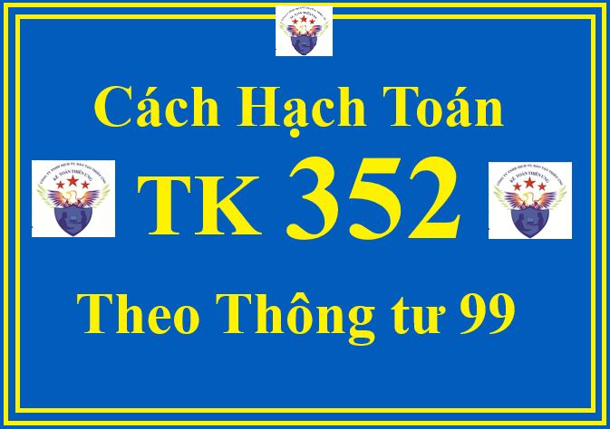

Tài khoản 352 - Dự phòng phải trả theo Thông tư 99/2025/TT-BTC dùng để phản ánh các khoản dự phòng phải trả hiện có và tình hình trích lập, sử dụng dự phòng phải trả của doanh nghiệp.
1. Các nguyên tắc kế toán khi hạch toán TK 352 - Dự phòng phải trả theo Thông tư 99/2025/TT-BTC như sau:
1.1. Dự phòng phải trả chỉ được ghi nhận khi thỏa mãn các điều kiện sau:
- Doanh nghiệp có nghĩa vụ nợ hiện tại (nghĩa vụ pháp lý hoặc nghĩa vụ liên đới) do kết quả từ một sự kiện đã xảy ra;
- Sự giảm sút về những lợi ích kinh tế có thể xảy ra dẫn đến việc yêu cầu phải thanh toán nghĩa vụ nợ; và
- Đưa ra được một ước tính đáng tin cậy về giá trị của nghĩa vụ nợ đó.
1.2. Giá trị được ghi nhận của một khoản dự phòng phải trả là giá trị được ước tính hợp lý nhất về khoản tiền doanh nghiệp sẽ phải chi để thanh toán nghĩa vụ nợ hiện tại tại ngày kết thúc kỳ kế toán.
Doanh nghiệp phải thuyết minh rõ các căn cứ thực hiện ước tính các khoản dự phòng phải trả và các thông tin mà doanh nghiệp sử dụng liên quan đến các ước tính này (ví dụ: giá trị ước tính hợp lý nhất về khoản chi phí, đánh giá của chủ sở hữu doanh nghiệp, dữ liệu lịch sử, phương pháp giá trị ước tính,...) trong Thuyết minh Báo cáo tài chính.
1.3. Khoản dự phòng phải trả được xác định tại thời điểm kết thúc kỳ kế toán để trích lập. Trường hợp số dự phòng phải trả cần lập ở kỳ kế toán này lớn hơn số dự phòng phải trả đã lập ở kỳ kế toán trước nhưng chưa sử dụng hết thì số chênh lệch được ghi nhận vào chi phí sản xuất, kinh doanh của kỳ kế toán đó. Trường hợp số dự phòng phải trả lập ở kỳ kế toán này nhỏ hơn số dự phòng phải trả đã lập ở kỳ kế toán trước nhưng chưa sử dụng hết thì số chênh lệch phải được hoàn nhập ghi giảm chi phí sản xuất, kinh doanh của kỳ kế toán đó.
Dự phòng phải trả về bảo hành công trình xây dựng được lập tại thời điểm kết thúc kỳ kế toán năm cho từng công trình trên cơ sở doanh thu dịch vụ xây dựng đã thực hiện trong kỳ theo quy định của pháp luật về xây dựng, tính vào chi phí bán hàng. Trường hợp số dự phòng phải trả về bảo hành công trình xây dựng đã lập lớn hơn chi phí thực tế phát sinh thì số chênh lệch được hoàn nhập vào Tài khoản 641 - Chi phí bán hàng.
1.4. Chỉ những chi phí liên quan đến khoản dự phòng phải trả đã được trích lập mới được bù đắp bằng khoản dự phòng phải trả đó.
1.5. Không được ghi nhận khoản dự phòng cho các khoản lỗ hoạt động trong tương lai, trừ khi chúng liên quan đến một hợp đồng có rủi ro lớn và thỏa mãn điều kiện ghi nhận khoản dự phòng. Nếu doanh nghiệp có hợp đồng có rủi ro lớn thì nghĩa vụ nợ hiện tại theo hợp đồng phải được ghi nhận và đánh giá như một khoản dự phòng và khoản dự phòng được lập riêng biệt cho từng hợp đồng có rủi ro lớn. Hợp đồng có rủi ro lớn là hợp đồng trong đó có những chi phí không thể tránh được buộc phải trả cho các nghĩa vụ liên quan đến hợp đồng vượt quá lợi ích kinh tế dự tính thu được từ hợp đồng đó thì nghĩa vụ nợ hiện tại theo hợp đồng phải được ghi nhận và đánh giá như một khoản dự phòng.
Ví dụ: Doanh nghiệp phải ghi nhận khoản dự phòng phải trả đối với các hợp đồng có rủi ro lớn (là hợp đồng có số lượng hàng tồn kho mà doanh nghiệp đã ký cam kết bán không thể hủy ngang cho khách hàng lớn hơn tổng của số lượng hàng tồn kho mà doanh nghiệp hiện có cộng (+) với số lượng hàng tồn kho mà doanh nghiệp có thể mua hoặc sản xuất bổ sung để cung cấp cho khách hàng theo hợp đồng). Việc xác định các khoản dự phòng này được thực hiện theo quy định tại Chuẩn mực kế toán Việt Nam số 18 - Các khoản dự phòng, tài sản và nợ tiềm tàng và được hạch toán vào giá vốn hàng bán.
1.6. Các khoản dự phòng phải trả thường bao gồm:
- Dự phòng bảo hành sản phẩm, hàng hóa;
- Dự phòng bảo hành công trình xây dựng;
- Dự phòng tái cơ cấu doanh nghiệp;
- Dự phòng phải trả khác, bao gồm cả khoản dự phòng trợ cấp thôi việc, mất việc làm theo quy định của pháp luật, khoản dự phòng phải trả đối với hợp đồng có rủi ro lớn, dự phòng hoàn nguyên môi trường,... mà trong đó những chi phí bắt buộc phải trả cho các nghĩa vụ liên quan đến hợp đồng vượt quá những lợi ích kinh tế dự tính thu được từ hợp đồng đó.
1.7. Một khoản dự phòng cho các khoản chi phí tái cơ cấu doanh nghiệp chỉ được ghi nhận khi có đủ các điều kiện ghi nhận một khoản dự phòng theo quy định tại Chuẩn mực kế toán Việt Nam số 18 - Các khoản dự phòng, tài sản và nợ tiềm tàng. Trường hợp tiến hành tái cơ cấu doanh nghiệp thì nghĩa vụ liên đới chỉ phát sinh khi doanh nghiệp:
- Có kế hoạch chính thức cụ thể để xác định rõ việc tái cơ cấu doanh nghiệp, trong đó phải có ít nhất 5 nội dung sau:
+ Toàn bộ hoặc một phần của việc kinh doanh có liên quan;
+ Các vị trí quan trọng bị ảnh hưởng;
+ Vị trí, nhiệm vụ và số lượng nhân viên ước tính sẽ được nhận bồi thường khi họ buộc phải thôi việc;
+ Các khoản chi phí sẽ phải chi trả; và
+ Khi nào kế hoạch được thực hiện.
- Đưa ra được một dự tính chắc chắn về những đối tượng bị ảnh hưởng và tiến hành quá trình tái cơ cấu bằng việc bắt đầu thực hiện kế hoạch đó hoặc thông báo những vấn đề quan trọng đến những đối tượng bị ảnh hưởng của việc tái cơ cấu.
1.8. Một khoản dự phòng cho việc tái cơ cấu chỉ được dự tính cho những chi phí trực tiếp phát sinh từ hoạt động tái cơ cấu, đó là những chi phí thỏa mãn cả hai điều kiện:
- Cần phải có cho hoạt động tái cơ cấu;
- Không liên quan đến các hoạt động thường xuyên của doanh nghiệp.
Khoản dự phòng cho việc tái cơ cấu không bao gồm các chi phí như: Đào tạo lại hoặc luân chuyển nhân viên hiện có; Tiếp thị; Đầu tư vào những hệ thống mới và các mạng lưới phân phối.
1.9. Khi trích lập dự phòng phải trả, tùy theo bản chất khoản dự phòng, doanh nghiệp thực hiện hạch toán vào các tài khoản liên quan:
- Đối với dự phòng tái cơ cấu doanh nghiệp, doanh nghiệp ghi nhận vào chi phí quản lý doanh nghiệp.
- Đối với dự phòng hợp đồng rủi ro lớn: Đối với dự phòng liên quan đến hàng tồn kho để thực hiện hợp đồng, doanh nghiệp ghi nhận vào giá vốn hàng bán; còn đối với hợp đồng có rủi ro lớn khác, doanh nghiệp ghi nhận vào chi phí khác.
- Đối với khoản dự phòng phải trả về bảo hành sản phẩm, hàng hóa, công trình xây lắp được ghi nhận vào chi phí bán hàng.
1.10. Đối với hợp đồng thuê TSCĐ có điều khoản quy định khi kết thúc hợp đồng, doanh nghiệp có nghĩa vụ phải sửa chữa, bảo dưỡng, khôi phục để đưa tài sản về trạng thái như ban đầu thì doanh nghiệp được thực hiện trích trước dự phòng cho các chi phí sửa chữa, bảo dưỡng, khôi phục tài sản theo quy định của Chuẩn mực kế toán Việt Nam số 18 - Các khoản dự phòng, tài sản và nợ tiềm tàng. Việc hạch toán các khoản trích trước chi phí sửa chữa, bảo dưỡng, khôi phục để đưa tài sản về trạng thái ban đầu được hạch toán tương tự như dự phòng hoàn nguyên môi trường.
2. Kết cấu và nội dung phản ánh của Tài khoản 352 - Dự phòng phải trả theo Thông tư 99/2025/TT-BTC
| Bên Nợ: | Bên Có: |
|
- Ghi giảm dự phòng phải trả khi phát sinh khoản chi phí liên quan đến khoản dự phòng đã được lập ban đầu;
- Ghi giảm (hoàn nhập) dự phòng phải trả khi doanh nghiệp chắc chắn không còn phải chịu sự giảm sút về kinh tế do không phải chi trả cho nghĩa vụ nợ;
- Ghi giảm dự phòng phải trả về số chênh lệch giữa số dự phòng phải trả phải lập năm nay nhỏ hơn số dự phòng phải trả đã lập năm trước chưa sử dụng hết.
|
Phản ánh số dự phòng phải trả trích lập trong kỳ. |
|
Số dư bên Có: Phản ánh số dự phòng phải trả hiện có tại thời điểm kết thúc kỳ kế toán.
|
Tài khoản 352 có 4 tài khoản cấp 2:
- Tài khoản 3521 - Dự phòng bảo hành sản phẩm, hàng hóa: Tài khoản này dùng để phản ánh số dự phòng bảo hành sản phẩm, hàng hóa cho số lượng sản phẩm, hàng hóa đã xác định là tiêu thụ trong kỳ;
- Tài khoản 3522 - Dự phòng bảo hành công trình xây dựng: Tài khoản này dùng để phản ánh số dự phòng bảo hành công trình xây dựng đối với các công trình, hạng mục công trình xây dựng theo mức quy định của pháp luật về xây dựng trên cơ sở doanh thu dịch vụ xây dựng đã thực hiện trong kỳ;
- Tài khoản 3523 - Dự phòng tái cơ cấu doanh nghiệp: Tài khoản này phản ánh số dự phòng phải trả cho hoạt động tái cơ cấu doanh nghiệp, như chi phí di dời địa điểm kinh doanh, chi phí hỗ trợ người lao động,...;
- Tài khoản 3524 - Dự phòng phải trả khác: Tài khoản này phản ánh các khoản dự phòng phải trả khác theo quy định của pháp luật ngoài các khoản dự phòng đã được phản ánh nêu trên, như: dự phòng hoàn nguyên môi trường, chi phí thu dọn, khôi phục và hoàn trả mặt bằng; dự phòng trợ cấp thôi việc, mất việc làm theo quy định của pháp luật; dự phòng phải trả đối với hợp đồng có rủi ro lớn,...
Lưu ý:
Doanh nghiệp có thể mở thêm các tài khoản chi tiết của Tài khoản 3524 - Dự phòng phải trả khác để theo dõi từng loại dự phòng phải trả cho phù hợp với đặc điểm hoạt động sản xuất, kinh doanh và yêu cầu quản lý của đơn vị mình.
Doanh nghiệp phải thuyết minh trên Báo cáo tài chính thông tin về nghĩa vụ pháp lý hoặc nghĩa vụ liên đới, căn cứ ước tính giá trị (nếu có),... của nghĩa vụ hoàn nguyên môi trường, thu dọn, khôi phục, hoàn trả mặt bằng.
3. Cách định khoản hạch toán TK 352 - Dự phòng phải trả theo Thông tư 99/2025/TT-BTC
a) Phương pháp kế toán dự phòng bảo hành sản phẩm, hàng hóa
- Trường hợp doanh nghiệp bán hàng cho khách hàng có kèm theo nghĩa vụ bảo hành sửa chữa cho các hỏng hóc do lỗi sản xuất được phát hiện trong thời gian bảo hành sản phẩm, hàng hóa, doanh nghiệp tự ước tính chi phí bảo hành trên cơ sở số lượng sản phẩm, hàng hóa đã xác định là tiêu thụ trong kỳ. Khi lập dự phòng cho chi phí sửa chữa, bảo hành sản phẩm, hàng hóa đã bán, ghi:
Nợ TK 641 - Chi phí bán hàng
Có TK 352 - Dự phòng phải trả (3521).
- Khi phát sinh các khoản chi phí liên quan đến khoản dự phòng phải trả về bảo hành sản phẩm, hàng hóa đã lập ban đầu, như chi phí nguyên vật liệu, chi phí nhân công trực tiếp, chi phí khấu hao TSCĐ, chi phí dịch vụ mua ngoài...:
+ Trường hợp không có bộ phận độc lập về bảo hành sản phẩm, hàng hóa:
(+) Khi phát sinh các khoản chi phí liên quan đến việc bảo hành sản phẩm, hàng hóa, ghi:
Nợ các TK 621, 622, 627,...
Nợ TK 133 - Thuế GTGT được khấu trừ (nếu có)
Có các TK 111, 112, 152, 214, 331, 334, 338,...
(+) Cuối kỳ, kết chuyển chi phí bảo hành sản phẩm, hàng hóa thực tế phát sinh trong kỳ, ghi:
Nợ TK 154 - Chi phí sản xuất, kinh doanh dở dang
Có các TK 621, 622, 627,...
(+) Khi sửa chữa bảo hành sản phẩm, hàng hóa hoàn thành bàn giao cho khách hàng, ghi:
Nợ TK 352 - Dự phòng phải trả (3521)
Nợ TK 641 - Chi phí bán hàng (phần dự phòng phải trả về bảo hành sản phẩm, hàng hóa còn thiếu)
Có TK 154 - Chi phí sản xuất, kinh doanh dở dang.
+ Trường hợp có bộ phận độc lập về bảo hành sản phẩm, hàng hóa
Số tiền phải trả cho bộ phận bảo hành độc lập về chi phí bảo hành sản phẩm, hàng hóa, ghi:
Nợ TK 352 - Dự phòng phải trả (3521)
Nợ TK 641 - Chi phí bán hàng (chênh lệch nhỏ hơn giữa dự phòng phải trả bảo hành sản phẩm, hàng hóa so với chi phí thực tế về bảo hành)
Có TK 336 - Phải trả nội bộ.
- Tại thời điểm kết thúc kỳ kế toán, doanh nghiệp phải xác định số dự phòng bảo hành sản phẩm, hàng hóa cần trích lập:
+ Trường hợp số dự phòng cần lập ở kỳ kế toán này lớn hơn số dự phòng phải trả đã lập ở kỳ kế toán trước nhưng chưa sử dụng hết thì số chênh lệch hạch toán vào chi phí, ghi:
Nợ TK 641 - Chi phí bán hàng
Có TK 352 - Dự phòng phải trả (3521).
+ Trường hợp số dự phòng phải trả cần lập ở kỳ kế toán này nhỏ hộp số dự phòng phải trả đã lập ở kỳ kế toán trước nhưng chưa sử dụng hết thì số chênh lệch hoàn nhập ghi giảm chi phí, ghi:
Nợ TK 352 - Dự phòng phải trả (3521)
Có TK 641 - Chi phí bán hàng.
b) Phương pháp kế toán dự phòng bảo hành công trình xây dựng
- Khi doanh nghiệp ước tính hoặc xác định số dự phòng phải trả về bảo hành công trình xây dựng trên cơ sở doanh thu dịch vụ xây dựng đã thực hiện trong kỳ theo quy định của pháp luật về xây dựng, ghi:
Nợ TK 641 - Chi phí bán hàng
Có TK 352 - Dự phòng phải trả (3522).
- Khi phát sinh các khoản chi phí liên quan đến khoản dự phòng phải trả về bảo hành công trình xây dựng đã lập ban đầu, như chi phí nguyên vật liệu, chi phí nhân công trực tiếp, chi phí khấu hao TSCĐ, chi phí dịch vụ mua ngoài,...:
+ Trường hợp doanh nghiệp tự thực hiện việc bảo hành công trình xây dựng:
(+) Khi phát sinh các khoản chi phí liên quan đến việc bảo hành, ghi:
Nợ các TK 621, 622, 627,...
Nợ TK 133 - Thuế GTGT được khấu trừ (nếu có)
Có các TK 111, 112, 152, 214, 331, 334, 338,...
(+) Cuối kỳ, kết chuyển chi phí bảo hành thực tế phát sinh trong kỳ, ghi:
Nợ TK 154 - Chi phí sản xuất, kinh doanh dở dang
Có các TK 621, 622, 627,...
(+) Khi việc sửa chữa, bảo hành công trình xây dựng hoàn thành và bàn giao cho khách hàng, ghi:
Nợ TK 352 - Dự phòng phải trả (3522)
Nợ TK 641 - Chi phí bán hàng (chênh lệch giữa số dự phòng đã trích lập nhỏ hơn chi phí thực tế về bảo hành)
Có TK 154 - Chi phí sản xuất, kinh doanh dở dang.
+ Trường hợp doanh nghiệp thuê ngoài thực hiện việc bảo hành công trình xây dựng, ghi:
Nợ TK 352 - Dự phòng phải trả (3522)
Nợ TK 641 - Chi phí bán hàng (chênh lệch giữa số dự phòng đã trích lập nhỏ hơn chi phí bảo hành thực tế)
Nợ TK 133 - Thuế GTGT được khấu trừ (nếu có)
Có các TK 112, 331,...
- Hết thời hạn bảo hành công trình xây dựng, nếu công trình không phải bảo hành hoặc số dự phòng phải trả về bảo hành công trình xây dựng lớn hơn chi phí thực tế phát sinh thì số chênh lệch phải hoàn nhập, ghi:

Nợ TK 352 - Dự phòng phải trả (3522)
Có TK 641 - Chi phí bán hàng.
c) Phương pháp kế toán dự phòng tái cơ cấu doanh nghiệp và dự phòng phải trả khác
- Khi trích lập dự phòng cho các khoản chi phí tái cơ cấu doanh nghiệp, dự phòng phải trả khác, dự phòng cho các hợp đồng có rủi ro lớn, ghi:
Nợ các TK 632, 642, 811,...
Có TK 352 - Dự phòng phải trả (3523, 3524).
- Khi trích lập dự phòng cho các khoản chi phí hoàn nguyên môi trường, chi phí thu dọn, khôi phục và hoàn trả mặt bằng, dự phòng trợ cấp thôi việc theo quy định của pháp luật,..., ghi:
Nợ các TK 627, 641, 642,...
Có TK 352 - Dự phòng phải trả.
- Khi thực tế phát sinh các khoản chi phí liên quan đến khoản dự phòng phải trả đã lập, ghi:
Nợ TK 352 - Dự phòng phải trả (3523, 3524)
Có các TK 111, 112, 241, 331,...
d) Tại thời điểm kết thúc kỳ kế toán, doanh nghiệp phải xác định số dự phòng phải trả cần trích lập:
- Trường hợp số dự phòng phải trả cần lập ở kỳ kế toán này lớn hơn số dự phòng phải trả đã lập ở kỳ kế toán trước nhưng chưa sử dụng hết thì số chênh lệch hạch toán vào chi phí, ghi:
Nợ các TK 627, 632, 641, 642, 811,...
Có TK 352 - Dự phòng phải trả.
- Trường hợp số dự phòng phải trả cần lập ở kỳ kế toán này nhỏ hơn số dự phòng phải trả đã lập ở kỳ kế toán trước nhưng chưa sử dụng hết thì số chênh lệch hoàn nhập ghi giảm chi phí, ghi:
Nợ TK 352 - Dự phòng phải trả.
Có các TK 627, 632, 641, 642, 811,...
đ) Trong một số trường hợp, doanh nghiệp không thực hiện trích lập dự phòng mà có thể tìm kiếm một bên thứ 3 để thanh toán một phần hay toàn bộ chi phí cho việc thực hiện nghĩa vụ dự phòng của doanh nghiệp (ví dụ, thông qua các hợp đồng bảo hiểm, các khoản bồi thường hoặc nghĩa vụ bảo hành của nhà cung cấp), bên thứ 3 có thể hoàn trả lại những khoản mà doanh nghiệp đã thanh toán. Khi doanh nghiệp nhận được khoản bồi hoàn của một bên thứ 3 để thanh toán một phần hay toàn bộ chi phí cho khoản dự phòng, phần chênh lệch giữa số được bồi thường và chi phí thực tế phát sinh liên quan đến thực hiện nghĩa vụ dự phòng, ghi:
Nợ các TK 111, 112,...
Có TK 711 - Thu nhập khác.